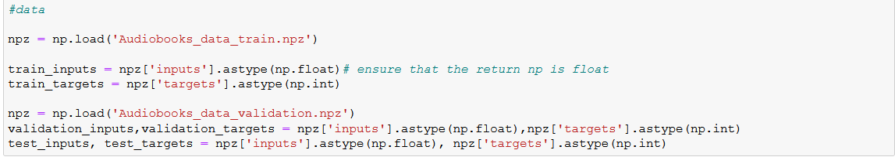

Audiobook purchase prediction
This deep learning model aims to predict whether the customer will purchase the audiobook again. The model can help the company to find customers who are most likely to purchase again. This can help to reduce customer churn and identify high-value customers.
 Photo by
Photo by 1.Extracting the data from csv
Firstly, i will load the csv file and put my inputs and target as a variable.
2.Preprocessing of data
Balancing Dataset
I will balance the number of 0s and 1s of my targets in my dataset. This is to ensure that my model would generate higher accuracy.
Standardizing,Transforming and fitting the input
Using Standard scaler,i will fit and transform the balanced input.
Shuffle
i shuffle the data to prevent the model from learning the order of the training and any bias
Splitting the dataset into training,testing and validation
i shuffle the data to prevent the model from learning the order of the training and any bias
3.Building the Deep Learning Model
Loading of training,testing and validation data into the model

Building a Convolutional Neural Network(CNN)
For my CNN,there will be 10 inputs, 2 outputs of 1s and 0s and 2 Convolutional layers
Model Fitting
Results
Based on the result as shown below, the model is 90% accurate.
Using model.predict with the test input, i am able to see how many numbers of customer will purchase the audiobook. "1" means it will purchase again while "0" means it will not purchase again